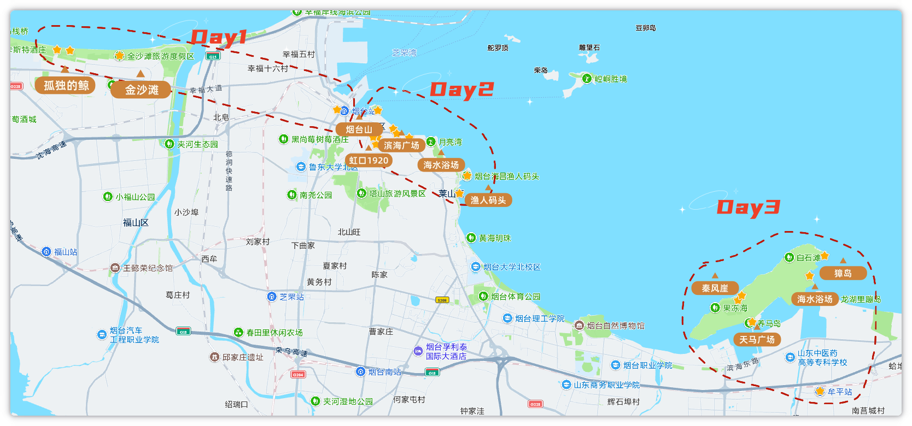
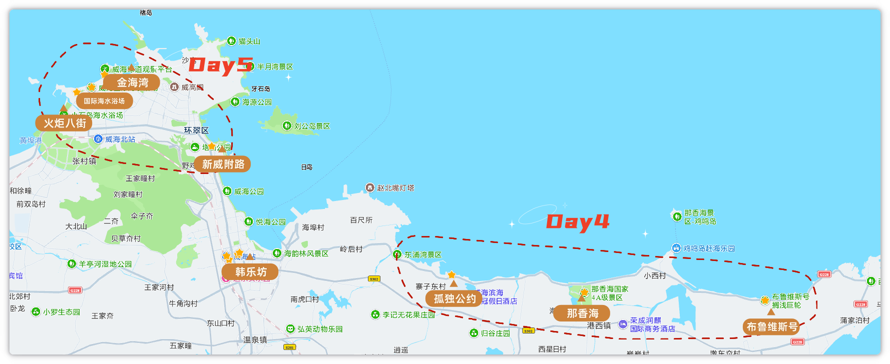

配图放 assets/。正文已定稿。
这次印象最深的不是金沙滩，是荣成海边的布鲁维斯号，拍照确实好看，人也晒得够呛。
2026 年 6 月 1 到 5 号，两个大人带四岁孩子，走了五天：烟台看海，转到威海后租车，荣成环海和威海市区都开。节奏适中，不算躺平也不是特种兵；热是真热，好在一路都靠海。
整体感觉烟台一般，威海更舒服。如果只记一个点，就是布鲁维斯号。
适合想看海、带着小孩慢慢玩的人。五天里要走一段路，还要倒一次高铁，威海这边还得租车开几天（不是只开荣成那一天），接受不了这些的话会比较累。
不太适合两种人：一种是只想酒店躺平、不想折腾交通；一种是想特种兵刷景、只追网红点——这次路线偏松，景点也不会排满。
我们真实节奏算适中：有海风发呆的时候，也有一整天沿海走下来腿酸的时候（主要是烟台那天）。
| 天 | 计划 | 实际 | 一句话评价 |
|---|---|---|---|
| D1 | 抵达烟台 → 金沙滩日落 | 抵达烟台 → 金沙滩日落 | 到站不赶，金沙滩日落从容，孤独的鲸值得停 |
| D2 | 芝罘海岸线（烟台山–虹口1920–渔人码头–所城里） | 芝罘海岸线（烟台山–虹口1920–渔人码头–所城里） | 走得最多最累，海边还行，所城里偏商业 |
| D3 | 滨海中路 / 养马岛 → 转威海 | 养马岛 → 转威海 | 转场顺利，养马岛一般（租电动别乱跟司机），韩乐坊吃得爽 |
| D4 | 荣成环海自驾（鸡鸣岛–那香海–布鲁维斯–孤独公约） | 布鲁维斯–那香海–孤独公约 | 起晚错过鸡鸣岛，剩下打卡点都出片 |
| D5 | 火炬八街清晨 → 金海湾 / 猫头山 → 返程 | 新威附路–火炬八街–威海国际海水浴场–金海湾 | 五天最值：火炬八街出片，金海湾日落好看 |
总结：
五天实际路线：烟台两天半看海，牟平转威海；到威海后租车贯穿后面行程（荣成打卡 + 市区收尾），不是只租一天。
最值的是 D5——火炬八街和金海湾，懒得早起也会觉得值。
最累的是 D2，芝罘海岸线一路走下来腿酸。
若重来，会重排 D3 养马岛：滨海中路没去成，岛上也踩了租电动的坑，转场本身倒是稳的。


下午到烟台（15:51），入住如家商旅（火车站客运码头店），放下行李就去金沙滩看日落，顺路停了「孤独的鲸」。
最推荐孤独的鲸——专程绕一下值得，打卡的人不少，出片稳。几乎没坑：到站完全来得及赶日落，时间很富裕，不用一下车就狂奔。
晚饭吃的家常菜，便宜好吃（店名可再补）。酒店离烟台站很近，步行就到，带娃转机方便；住着还好，图的是位置。
路线大概是：烟台山看灯塔俯瞰海和城 → 滨海广场歇脚 → 虹口1920逛文创拍照 → 渔人码头看海 → 第二海水浴场觉得一般，改去第一海水浴场 → 傍晚所城里。
这天走得最多。最推荐渔人码头，腿酸的时候在这儿歇着看海最值。17 路双层巴士二楼左手边想拍海，人多没抢到，要去就早点占座。所城里商业气息重，别指望烟火气；第二海水浴场可砍，第一海水浴场体感更好。
上午老烟台灌汤包，海鲜很新鲜；下午蓝白，正常快餐垫肚子。仍住如家。鞋要舒服，带娃更要控节奏，别把点排太满。
早上没赶滨海中路，吃完早饭买了零食，带行李直奔养马岛；岛上走了海水浴场、獐岛、秦风崖，玩完从牟平站高铁转威海。晚上住绿茵岛咖啡酒店，去韩乐坊吃第一顿。
最推荐韩乐坊：卷凉皮、炸串、鲷鱼烧、锅包肉、广信牛奶都能点，量大好吃，带娃也合适。养马岛本身别抱太高预期——三点看下来差强人意，景色一般。
转场本身稳。坑在租电动：网约车司机会带去他自己合作的点，不如直接去天马广场租。滨海中路这次没去成，重来的话要重新排上午。酒店在威海高铁站旁，步行可达，服务态度很好，愿意复住。
威海站一嗨取车（点位在站内，不太好找；车是威海段全程用，不是只开荣成这一天），然后往荣成打卡布鲁维斯号、那香海、孤独公约咖啡馆；晚上开回市区，又去了韩乐坊。鸡鸣岛因为起晚没去成。
最推荐布鲁维斯号，拍照确实好看，也是整趟印象最深的点；孤独公约同理，出片，值得停。环海路开车顺，但我们一路赶打卡，风景没怎么认真看，别抱太高「一路都是大片」的预期。起晚的代价就是鸡鸣岛整段直接没了。晚饭继续韩乐坊。
车还在手上。最先去新威附路 → 火炬八街（没赶 7:30，人已经很多，但出片很好）→ 国际海水浴场看海发呆睡觉 → 金海湾看日落。猫头山没去，直接砍了。看完日落后还车，再返程。
最推荐火炬八街 + 金海湾日落，五天里最值的一天，懒得早起也会觉得值。新威附路排在第一站就不推荐——基本都是店铺，没什么逛头，别专门绕。火炬八街晚去也行，接受人多就好；想空一点还是得起早。
酒店就在高铁站附近，取行李、还车、进站都相对省心。金海湾看完日落后再还车返程，时间充裕，不用卡点狂奔——住站旁 + 全程租车，收尾不慌。
总结：
若只问必去：韩乐坊填肚子，国际海水浴场躺平，荣成线拍照。
烟台山、养马岛有时间再去；滨海广场、新威附路、第二海水浴场可以砍。
计划里最该听的是：荣成要租车、站内取车不好找、烟台那天真的很走路。
最不用慌的是：阴天、赶日落、赶火车——这三样我们都虚惊一场。
| 酒店 | 位置 | 睡眠 | 复住 | 一句话 |
|---|---|---|---|---|
| 如家商旅（烟台火车站客运码头店） | 离烟台站很近，可步行 | 好 | 一般 | 图位置，住着还好，带娃转机方便 |
| 绿茵岛咖啡酒店（威海高铁站店） | 离威海站很近，可步行 | 好 | 愿意 | 服务态度很好，还车进站都省心，推荐 |
总结：
烟台住如家就为了挨着站，步行可达，睡眠还行，复住意愿一般。
威海绿茵岛咖啡酒店更推荐：站旁、服务好，租车还车 + 返程取行李都顺。
烟台
威海
总结：
烟台吃：灌汤包新鲜，蓝白随便填肚子，D1 家常菜实惠。
威海吃基本围着韩乐坊转——炸甩最值得点，牛奶和铜锣烧也能安排；孤独公约咖啡蛋糕一般，别冲着味道去。
总结：
烟台靠打车和走路；养马岛坑在租电动选点。
牟平转威海按票走就行。威海段直接租全程，荣成和市区都开；取车点难找、市区停车烦，但站旁还车返程很省心。
| 项目 | 金额 |
|---|---|
| 交通（含高铁 / 打车 / 租车等） | 2000 |
| 住宿 | 880 |
| 餐饮 | 610 |
| 购物 | 250 |
| 合计（2大1小·5天） | 约 3740 |
总结：
五天账本大概：交通 2000、住宿 880、餐饮 610、购物 250，合计三千七左右。
大头在交通——倒高铁加威海全程租车；住宿和吃饭反而克制。想省就砍购物、少打车，租车这块不好省，荣成线基本靠它。
如果只剩 3 天，我会直接冲威海：韩乐坊、国际海水浴场、荣成线出片、火炬八街和金海湾日落。烟台那段可以砍或大幅压缩。
如果重来，我会把时间匀给鸡鸣岛（这次起晚没去成），再加逛几个威海市区的公园，少在养马岛和烟台费腿的点上耗。
真心话：热是真热，海是真好看；整体烟台一般，威海更舒服。带娃慢慢走一趟够了，别排特种兵。
路线、吃住有疑问直接问，能想起来的我都回。